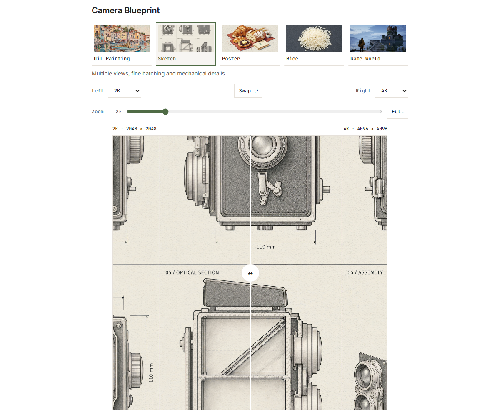
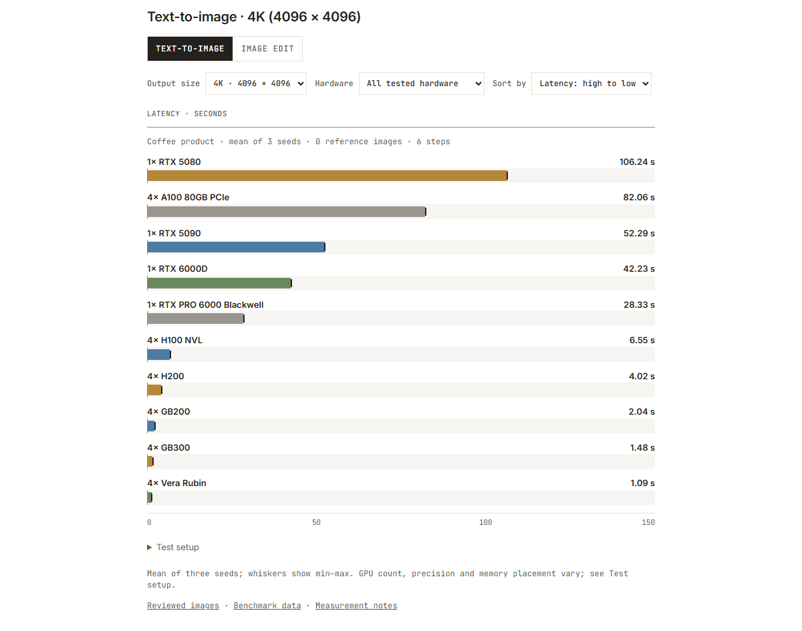
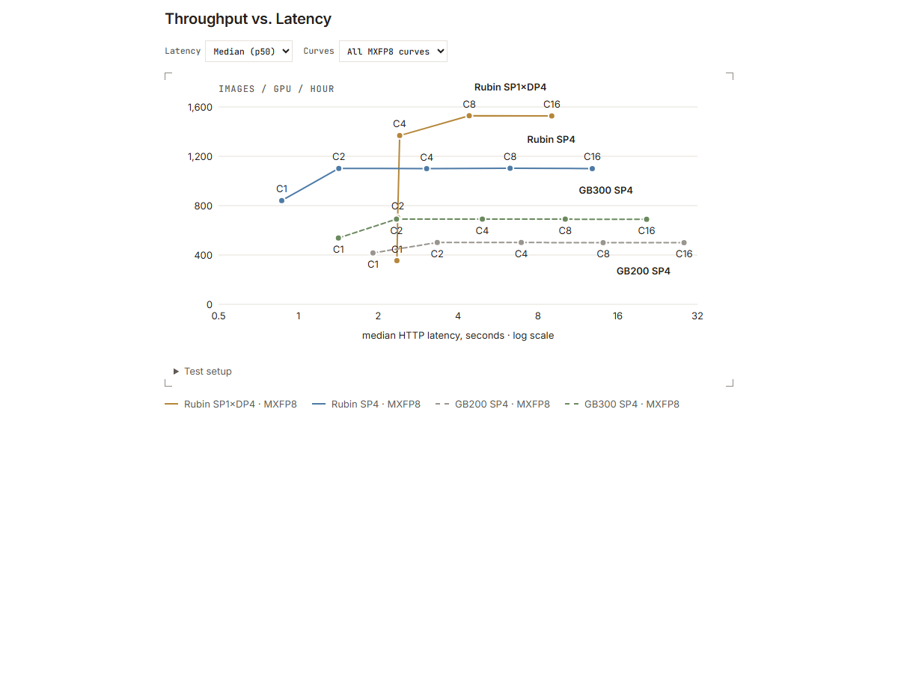
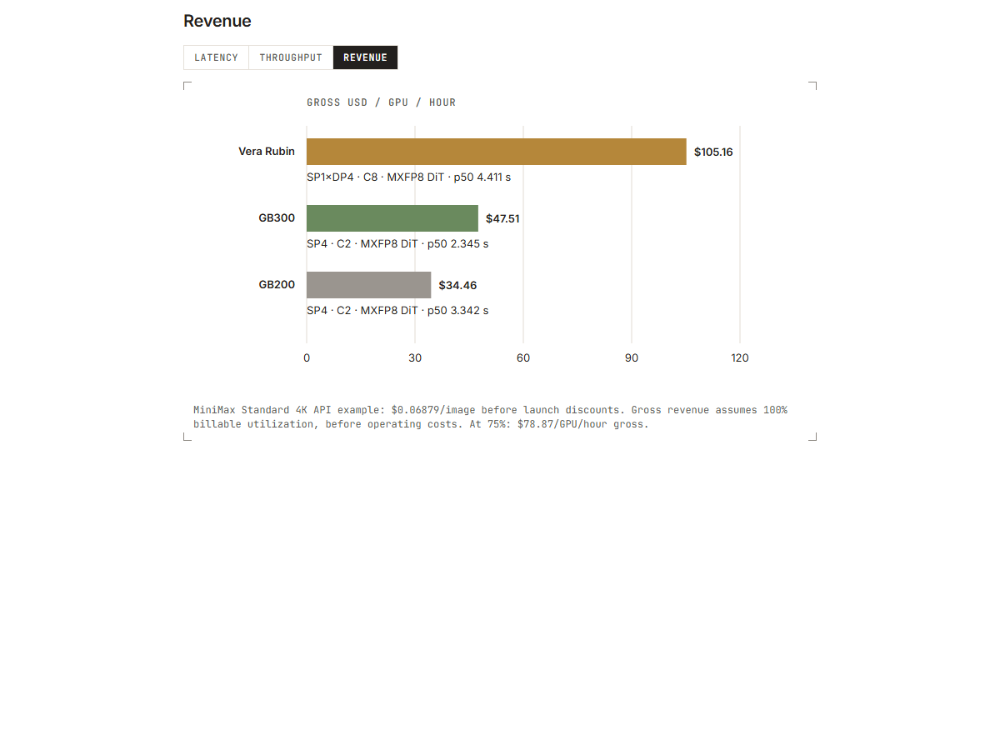

H3-Image 首日支持：Vera Rubin 上 0.87 秒生成 4K 图像
我们使用 vLLM-Omni 将 MiniMax H3-Image带到 NVIDIA Vera Rubin。在 4 张 GPU 上，原生 4096×4096 图像在短提示词服务基准中的中位生成时间达到 0.87 秒。另一套吞吐配置可达到 每小时 6,115 张图像，折算为 每天 146,755 张。
若采用 MiniMax 官方 Standard 4K API 定价示例中的每张 0.06879 美元，并把发布折扣前价格视为假设销售价格，峰值吞吐对应的毛收入为满计费利用率下 每 GPU 每小时 105.16 美元，或 75% 利用率下 每 GPU 每小时 78.87 美元。这些估算未扣除运营成本；每日容量是根据实测速率外推所得。
H3-Image 是支持文本生成图像和图像编辑的开放权重模型。一个检查点即可处理两种任务，只需 6 个采样步骤，无需超分辨率模型即可原生生成高分辨率图像，并支持最多 16 张参考图。
我们让 H3-Image 覆盖消费级和数据中心 GPU，包括 NVIDIA、AMD、Intel 和 Moore Threads（MUSA），同时支持 Huawei Ascend NPU。
- 单 GPU 与多 GPU 服务。 可以在单张 RTX GPU 上运行，也可在多张数据中心 GPU 上分布式生成，并针对不同显存容量选择配置。
- 覆盖 10 种 NVIDIA 硬件的实测。 对比文本生成图像与编辑任务在不同输出分辨率、参考图数量下的延迟。
质量
油画笔触、多视角相机设计图、日文海报字样和米粒上的微小文字，能够直观展示缩小图像会损失哪些细节；游戏环境则展示风化石材和反射光。每组比较都以一张 H3-Image 生成的 4K 图像为源，保持宽高比缩放到 1K 和 2K，从而固定构图。

性能
两种 API 模式很直接：Text-to-Image 接收提示词；Image Edit 接收提示词及一张或多张参考图。主要比较使用 **2K（2048×2048）**与 **4K（4096×4096）**输出，每次请求返回一张图像。所有机器使用固定提示词和参考文件。请求参数见 MiniMax API 指南。
在下方交互图中可选择 Text-to-image 或 Image Edit。编辑模式支持选择 1、2、4、8 或 16 张参考图；输出尺寸反映实际测量场景。
对于 4K 文本生成图像，4 张 GB300 平均耗时 1.48 秒；使用一张参考图的 4K 图像编辑平均耗时 1.77 秒。一张 RTX 5090 使用 CPU 逐层卸载时，同类请求分别耗时 52.29 秒和 61.45 秒。每项计时均包含完整 PNG 响应。
对于 2K 文本生成图像，单张 H200 在 BF16、权重常驻条件下平均耗时 1.49 秒。
对于这里使用的详细咖啡产品提示词，Rubin 生成 4K 图像平均耗时 1.09 秒。标题中的 0.87 秒来自后文“Rubin 启动优化”中的另一项短提示词服务基准，而非这项请求。两者都使用 4 张 GPU、SP4 和 MXFP8，但请求语料、HTTP 客户端和汇总统计量不同。
每条结果都会显示 GPU 数量。“Test setup”列出 GPU 型号、每张 GPU 的 CUDA 可见显存、互连、功耗上限和服务配置。由于 GPU 数量、精度和内存放置方式不同，这些数字比较的是完整部署系统，而不是单独隔离 GPU 架构。1K 测试返回 1024×1024 图像；由于本地模型的默认最小画布，它们会先以 2048×2048 生成再缩小，因此不能代表原生 1K 扩散计算。部分 1K 和 2K 运行还使用不同的分配器设置，详见 Test setup。

基准数据。柱状图显示预热后三个种子的平均值，误差范围为最小值到最大值；配置、计时范围和 10 分钟请求上限记录在 Test setup 中。
推理优化
H3-Image 由 Qwen3-VL 编码器、33.1B 稠密 DiT 和图像 VAE 组成。原生 4096×4096 输出会在 6 个去噪步骤中产生 16,384 个目标图像 token，然后才进行 VAE 解码。参考图还会增加编码工作和条件 token。因此我们有三个实际优化目标：DiT 计算、解码开销和模型内存。架构详情见模型说明。
更快的 DiT
在 Blackwell 和 Rubin 上，MXFP8 GEMM 加速适用的 DiT 线性层，同时减少权重占用。Ulysses SP4 将序列计算分布到 4 张 GPU；DiT TP1 则保持权重复制。AdaLN 缓存在输入和权重一致时复用完全相同的条件投影。6 个去噪步骤仍全部执行。编码器和 VAE 保持配置精度；Hopper 与 Ampere 使用 BF16。
更快的解码
VAE 会独立解码图像 tile。我们把 tile 分配到多个 GPU，然后在每张 GPU 上结合 CUDA Graph 重放和多 CUDA stream：Graph 重放减少重复启动开销，多 stream 让多个 tile 重叠执行。
4 张 GB300 上的独立 BF16 对照说明了这项优化的效果：VAE 解码从 2.635 秒降至 0.213 秒，端到端延迟由约 4.0 秒降至 1.6 秒，即加速 2.5 倍。两条路径都已经把 tile 分布到 4 张 GPU；这里测量的是 Graph 加多 stream 的综合收益。
适配更小的 GPU
逐层 CPU 卸载用权重传输时间换取 GPU 内存。RTX 5090 和 RTX 5080 会卸载 DiT 与文本编码器，并以 eager 模式解码 VAE；RTX 6000D 与 RTX PRO 6000 让 DiT 常驻、卸载编码器，并使用 VAE CUDA Graph。这使单 GPU 部署成为可能，也解释了它与权重常驻数据中心配置之间的部分延迟差距。
Rubin 启动优化
我们的起点是 vLLM-Omni 的 H3-Image 实现和 vLLM Rubin 支持，运行时为 CUDA 13.4。H3-Image 在此基础上增加稠密扩散工作负载：原生 4096×4096 图像在 6 个去噪步骤中产生 16,384 个目标图像 token，之后执行 VAE 解码。我们测试了这条路径如何把 Rubin 的能力转化为交互延迟和服务吞吐。
本次运行做了两项改动：
- MXFP8 集成。 将 Omni 的扩散线性层连接到 vLLM 的在线 MXFP8 加载和内核选择。Rubin 上适用的 DiT 线性层使用 FlashInfer CuTe-DSL MXFP8 GEMM；注意力使用
TRTLLM_ATTN。这些都是现有库内核。文本编码器和 VAE 保持原生精度。 - 可靠的 4K 输出。 重复 4K 请求暴露了输出传输路径中的停滞。我们在传输解码后的 uint8 张量之后，把最终图像布局转换移到 CPU。回归检查确认重复请求都能完成，解码像素保持不变。
随后，我们使用现有 VAE CUDA Graph 和 AdaLN 缓存路径比较 SP4、SP2×DP2 和 SP1×DP4。4 张 GPU 采用 SP4 时达到 0.87 秒响应；采用 4 个副本时达到 每小时 6,115 张图像。测试固定为原生 4K 文本生成图像、无参考图、6 个步骤和 MXFP8 DiT 线性层；每个并发点使用独立的 160 请求提示词-种子语料：20 条长度 122–160 字符的短提示词，各配 8 个种子。前文跨硬件咖啡产品请求使用 1,292 字符提示词，并报告三个种子的平均值。
延迟
SP4、并发 1 时，中位延迟为 0.866 秒（p95 为 0.944 秒），比 GB200 快 2.21 倍，比 GB300 快 1.64 倍。三个延迟配置均使用 4 张 GPU、SP4 和 MXFP8。
吞吐
4 个单 GPU 副本（SP1×DP4）在并发 8 时达到 每小时 6,115 张图像，中位延迟 4.411 秒。SP4 在并发 2 时达到 每小时 4,407 张图像，中位延迟 1.421 秒。副本带来 38.7% 的吞吐提升；亚秒延迟与峰值吞吐是两个不同运行点。
固定使用 SP4 跨平台比较时，Rubin 的峰值吞吐为 GB200 的 2.20 倍、GB300 的 1.60 倍。每个绘图点包含 160 个预热后的请求；副本独立处理图像，并未把它们合并为一个 DiT batch。

经济性
每小时 6,115 张图像对应每套 4-GPU Rubin 系统每天约 146,755 张 4K 图像。我们采用 MiniMax 官方 API 定价示例中 Standard 4K 文本生成图像、无参考图、发布折扣前的每张 0.06879 美元。在这一假设售价下，满计费利用率的预计毛收入为 每 GPU 每小时 105.16 美元，75% 利用率下为 每 GPU 每小时 78.87 美元。

收入 = 每小时图像数 × 每张价格 × 计费利用率 ÷ 4 张 GPU。实际托管 API 费用会随文本 token 用量变化。收入数字未扣除运营成本；每日容量是根据实测速率外推，而非来自 24 小时压力测试。
其他硬件
H3-Image 还通过以下实现和配方支持 AMD Instinct、Intel Arc Pro、Huawei Ascend 和 Moore Threads。这些社区验证采用各自的工作负载和配置；前文匹配的性能数据只覆盖我们的 NVIDIA 测试。
AMD Instinct。 AMD 配方包含 MI325X 和 MI350X 上 1–8 张 GPU 的文本生成图像与编辑测量，使用 BF16 和 FLASH_ATTN，并覆盖 Ulysses 序列并行和张量并行。ROCm 使用单个 VAE Graph 副本，以避免并发 Graph 重放时观察到的挂起。
Intel Arc Pro B70。 XPU 配方记录 1、2、4 张 GPU 的实测部署。推荐的 4 卡布局使用 DiT TP4 + 文本编码器逐层卸载，以适配 32 GB 显存。更小布局还会卸载 DiT 权重；VAE 在 XPU 上以 eager 模式解码。
Huawei Ascend。 NPU 配方覆盖 Atlas 800I A2、Atlas 800T A3 和 Atlas 350（A5）。A2 和 A5 的实测配置使用 1、2 或 4 张 NPU、BF16 和 eager 执行。4-NPU 配置在 A2 上使用 DiT TP4，在 A5 上使用 Ulysses SP4 + 文本编码器 TP4；更小配置使用逐层卸载。
Moore Threads MTT S5000。 H3-Image 通过 MUSA 实现获得支持，该实现启用 VAE Graph 解码，并提供模型专用配方，记录 80 GB S5000 卡上的 TP2 和 TP4 布局。Graph 测试会检查与 eager 解码逐位一致。
OpenDirector
OpenDirector 是由 vLLM-Omni 提交者发起、面向创作者的智能体平台，目标是让 vLLM-Omni 更容易用于创意工作流。
其 H3-Image 首日集成目前使用 MiniMax 托管图像 API。创作者可以通过画布或智能体生成和编辑图像，并把输出作为下一次编辑的参考。我们计划扩展对由 vLLM-Omni 驱动、本地部署的 H3-Image 工作流的支持。
致谢
感谢 MiniMax 发布 H3-Image 及其模型权重；感谢 NVIDIA 团队和 vLLM 社区对 Vera Rubin 支持的投入；也感谢 vLLM-Omni 和 FlashInfer 贡献者提供本文所用的服务与内核基础设施。
同时感谢 OpenDirector 贡献者为创意工作流中的 H3-Image 集成所做的工作。